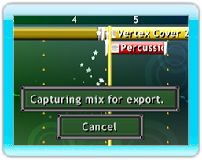
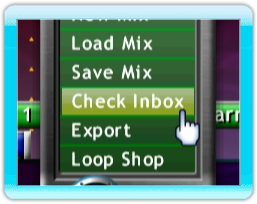

20 |
Exporting and Sharing |
 |
|

To export a mix, load the mix you want into the Arranger then select the Mix Menu icon and select 'Export'. You will be prompted to name your mix and enter your email address (optional) in order to receive a quick link to download your mix.
After the track is uploaded to the Mix Superstar server you will also receive a code, which you can enter at www.mixsuperstar.com to download your mix.
When you receive a shared mix from a Wii Friend, the Mix Menu icon will begin flashing. Select the icon and press the 'Check Inbox' option. In this menu you can import mixes by selecting the file you wish to import, and then pressing the 'Import' button on the right. Once you import a file it will be removed from the inbox and will be found under the 'My Mixes' section in the browser.
Please note: All Wii Friends will be displayed; however, only those who have downloaded Mix Superstar to their Wii console will be able to share music via this service. We recommend sending your friend a message in advance to confirm they have downloaded Mix Superstar. |
 WiiConnect24
WiiConnect24 |
 |
 |